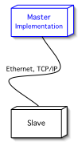

TCP Slave HOW-TO
- About
- What is a Slave?
- What is a Process Image?
- Classes of Interest for the Developer
- Implementation
About
This document is a tutorial for writing Modbus/TCP Slave applications utilizing
the jamod library. It explains the basics and walk's you through
a simple command line Slave implementation,that will serve the values from a
static process image on Master requests.
If you are new to Modbus, it is highly recommended to first take a look at Understanding
the Protocol (especially the section about the TCP implementation) as well as the actual protocol specifications.
What is a Slave?
Thinking in terms of the Client-Server network computing paradigm, the Slave application is a Server. It has a Listener for receiving an incoming Request from the Master application (which indeed is a Client) and sends a corresponding Response, just as described in Understanding the Protocol.
The simple network setup for this tutorial is composed of two nodes, as depicted in Figure 1.
Figure 1: Network Setup
|

|
The implementation from the jamod library will automagically construct
the actual responses for requests related to the standard Modbus data model, according
to the contents of the actually set Process Image.
The reference to the actual Process Image is stored in the Modbus Coupler a singleton
instance accessible throughout the VM.
What is a Process Image?
A process image is basically a collection of Discrete Inputs, Discrete Outputs (Coils),
Input Registers and Registers.
Please refer to Understanding the Process Image for more information.
Classes of Interest for the Developer
The motivation for creating jamod was to achieve an intuitive and object
oriented implementation of the Modbus protocol, in a way, that there is a natural mapping
from the domain knowledge (i.e. Modbus protocol) to the abstract class model.
The important elements in the description above (What is a Slave?) have been
highlighted and the following list represents the mapping between them and the classes from
jamod that will be needed for a slave implementation:
- Listener: ModbusTCPListener
- Process Image: ProcessImage (respectively it's direct known subclass SimpleProcessImage)
- Discrete Inputs: DigitalIn (respectively it's direct known subclass SimpleDigitalIn)
- Discrete Outputs: DigitalOut (respectively it's direct known subclass SimpleDigitalOut)
- Input Registers: InputRegister (respectively it's direct known subclass SimpleInputRegister)
- Registers: Register (respectively it's direct known subclass SimpleRegister)
- Modbus Coupler: ModbusCoupler
Implementation
As the idea is to provide a tutorial in form of a very simple command line example, it will consist of only one class and most of the work will be done in the entry method (public static void main(String args[])). This is probably not the way jamod will be usually employed in OO designs, but we hope it serves the demonstrative purpose.
Now let's start writing code. We need a simple Java application skeleton, with imports of all jamod packages:
import net.wimpi.modbus.net.*;
import net.wimpi.modbus.procimg.*;
import net.wimpi.modbus.ModbusCoupler;
public class TCPSlaveTest {
public static void main(String[] args) {
try {
...
...
} catch (Exception ex) {
ex.printStackTrace();
}
}//main
}//class TCPSlaveTest
Next we add the instances and variables the application will need, acquiring the value of the port number from the first commandline parameter if given:
/* The important instances and variables */
ModbusTCPListener listener = null;
SimpleProcessImage spi = null;
int port = Modbus.DEFAULT_PORT;
//1. Set port number from commandline parameter
if(args != null && args.length ==1) {
port = Integer.parseInt(args[0]);
}
Next we will construct the process image and setup the coupler to hold the reference:
//2. Prepare a process image spi = new SimpleProcessImage(); spi.addDigitalOut(new SimpleDigitalOut(true)); spi.addDigitalOut(new SimpleDigitalOut(false)); spi.addDigitalIn(new SimpleDigitalIn(false)); spi.addDigitalIn(new SimpleDigitalIn(true)); spi.addDigitalIn(new SimpleDigitalIn(false)); spi.addDigitalIn(new SimpleDigitalIn(true)); spi.addRegister(new SimpleRegister(251)); spi.addInputRegister(new SimpleInputRegister(45)); //3. Set the image on the coupler ModbusCoupler.getReference().setProcessImage(spi); ModbusCoupler.getReference().setMaster(false); ModbusCoupler.getReference().setUnitID(15);
The last step is to create a listener with a thread pool size of 3 and start it:
//4. Create a listener with 3 threads in pool listener = new ModbusTCPListener(3); listener.setPort(port); listener.start();
That's all, your slave is ready to serve requests.
You can test the slave we just created using the master application from the
TCP Master How-To.
The following is an example output from the slave, given the request from the formerly
mentioned TCP Master How-To.
Fangorn:~/development/java/jamod wimpi$ java -Dnet.wimpi.modbus.debug=true \ -cp build/classes net.wimpi.modbus.cmd.TCPSlaveTest 5555 jModbus Modbus Slave (Server) Listening... Listenening to ServerSocket[addr=localhost/127.0.0.1,port=0,localport=5555](Port 5555) Making new connection Socket[addr=/127.0.0.1,port=58379,localport=5555] Request:00 00 00 00 00 06 00 02 00 00 00 04 Response:00 00 00 00 00 04 00 02 01 50 Request:00 01 00 00 00 06 00 02 00 00 00 04 Response:00 01 00 00 00 04 00 02 01 50 Request:00 02 00 00 00 06 00 02 00 00 00 04 Response:00 02 00 00 00 04 00 02 01 50
by Dieter Wimberger